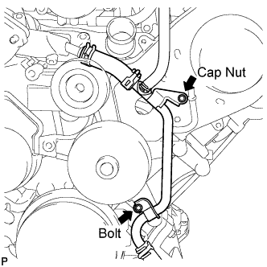
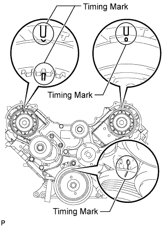

VALVE CLEARANCE > ADJUSTMENT |
| 1. DISCHARGE FUEL SYSTEM PRESSURE |
Discharge the fuel system pressure (Click here).
| 2. DISCONNECT CABLE FROM NEGATIVE BATTERY TERMINAL |
| 3. REMOVE FRONT FENDER SPLASH SHIELD SUB-ASSEMBLY RH |
| 4. REMOVE FRONT FENDER SPLASH SHIELD SUB-ASSEMBLY LH |
 |
Remove the 3 bolts and screw.
Turn the clip indicated by the arrow in the illustration to remove the fender splash shield.
| 5. REMOVE NO. 1 ENGINE UNDER COVER SUB-ASSEMBLY |
 |
Remove the 10 bolts and No. 1 engine under cover.
| 6. REMOVE V-BANK COVER SUB-ASSEMBLY |
 |
Remove the 2 nuts and V-bank cover.
| 7. REMOVE AIR CLEANER HOSE ASSEMBLY |
 |
Disconnect the vacuum transmitting hose and No. 2 ventilation hose.
Loosen the 2 hose clamps.
Remove the air cleaner hose.
| 8. REMOVE AIR CLEANER ASSEMBLY |
 |
Disconnect the clamp and MAF connector.
Remove the 3 bolts and air cleaner.
| 9. REMOVE FAN AND GENERATOR V BELT |
 |
Loosen the belt tension by turning the belt tensioner counterclockwise, and then remove the fan and generator V belt.
| 10. REMOVE NO. 2 FUEL HOSE |
for engine side:
 |
Detach the fuel hose clamp.
Detach the lock claw by lifting up the cover, as shown in the illustration.
Pinch and pull the No. 2 fuel hose connector to disconnect the connector from the No. 3 fuel pipe.
for body side:
 |
Pinch and pull the No. 2 fuel hose connector to disconnect the connector from the fuel pipe.
| 11. DISCONNECT FUEL HOSE |
 |
Remove the fuel hose clamp.
Pinch and pull the fuel hose connector to disconnect the connector from the fuel pipe.
| 12. REMOVE FUEL PRESSURE PULSATION DAMPER ASSEMBLY |
 |
Disconnect the fuel injector connector.
Remove the pulsation damper, upper gasket, fuel hose and lower gasket.
| 13. DISCONNECT WIRE HARNESS |
 |
Disconnect the 2 air injection control driver connectors.
Remove the bolt and disconnect the ground wire.
Disconnect the wire harness clamp.
 |
Disconnect the 2 clamps and 2 connectors from the engine room relay block.
Disconnect connector A from the engine room relay block.
Disconnect the wire harness clamp from the cylinder head cover LH.
| 14. REMOVE IGNITION COIL ASSEMBLY |
 |
Disconnect the 8 ignition coil connectors.
Remove the 8 bolts and pull out the 8 ignition coils.
| 15. REMOVE SPARK PLUG |
Remove the 8 spark plugs.
| 16. DISCONNECT NO. 1 WATER BY-PASS PIPE (w/ Air Cooled Transmission Oil Cooler) |
 |
Remove the 2 bolts and disconnect the water by-pass pipe from the cylinder head cover RH.
| 17. REMOVE CYLINDER HEAD COVER SUB-ASSEMBLY |
 |
Remove the 9 bolts, cylinder head cover and gasket.
| 18. REMOVE CYLINDER HEAD COVER SUB-ASSEMBLY LH |
 |
Remove the 9 bolts, cylinder head cover and gasket.
| 19. REMOVE SPARK PLUG TUBE GASKET |
 |
Bend the 8 ventilation case claws of the cylinder head cover to an angle of 90° or more.
Using a screwdriver, pry out the gaskets.
| 20. REMOVE SEMICIRCULAR PLUG |
Remove the 4 semicircular plugs from the cylinder heads.
| 21. DISCONNECT OIL COOLER PIPE |
 |
Remove the cap nut and bolt. Then disconnect the oil cooler pipe.
| 22. REMOVE NO. 3 TIMING BELT COVER SUB-ASSEMBLY LH |
 |
Detach the 3 wire clamps and disconnect the camshaft timing oil control valve connector and control motor connector.
 |
Disconnect the camshaft position sensor connector.
Disconnect the camshaft position sensor wire from the 2 wire clamps on the timing belt cover.
Remove the wire grommet from the timing belt cover.
Remove the 4 bolts.
Pull the cover outward, pull the camshaft position sensor wire out of the cover, and remove the cover.
| 23. REMOVE NO. 3 TIMING BELT COVER SUB-ASSEMBLY RH |
 |
Remove the 3 bolts, nut and timing belt cover.
| 24. SET NO. 1 CYLINDER TO TDC/COMPRESSION |
 |
Turn the crankshaft damper to align its notch with timing mark "0" of the No. 1 timing belt cover.
Check that the timing marks of the camshaft timing pulleys and timing belt rear plates are aligned.
If not, turn the crankshaft 1 complete revolution (360°) and align the marks as above.
| 25. INSPECT VALVE CLEARANCE |
 |
Check only the valves indicated.
Using a feeler gauge, measure the clearance between the valve lifter and camshaft.
| Item | Specified Condition |
| Intake | 0.15 to 0.25 mm (0.00591 to 0.00984 in.) |
| Exhaust | 0.25 to 0.35 mm (0.00984 to 0.0138 in.) |
Record the out-of-specification valve clearance measurements. They will be used later to determine the required replacement adjusting shim.
 |
Turn the crankshaft 1 complete revolution (360°) and align the camshaft timing marks.
Check only the valves indicated in the illustration.
Using a feeler gauge, measure the clearance between the valve lifter and camshaft.
| Item | Specified Condition |
| Intake | 0.15 to 0.25 mm (0.00591 to 0.00984 in.) |
| Exhaust | 0.25 to 0.35 mm (0.00984 to 0.0138 in.) |
Record the out-of-specification valve clearance measurements. They will be used later to determine the required replacement adjusting shim.
| 26. ADJUST VALVE CLEARANCE |
Remove the timing belt (Click here).
Remove the camshaft (Click here).
Remove the valve lifter and adjusting shim.
Using a micrometer, measure the thickness of the removed shim.
 |
Determine the replacement adjusting shim size according to the formula or charts below.
Calculate the thickness of a new shim so that the valve clearance comes within the specified value.
Select a new shim with a thickness as close as possible to the calculated value.

| Shim No. | Thickness | Shim No. | Thickness | Shim No. | Thickness |
| 00 | 2.000 mm (0.0787 in.) | 28 | 2.280 mm (0.0898 in.) | 56 | 2.560 mm (0.1008 in.) |
| 02 | 2.020 mm (0.0795 in.) | 30 | 2.300 mm (0.0906 in.) | 58 | 2.580 mm (0.1016 in.) |
| 04 | 2.040 mm (0.0803 in.) | 32 | 2.320 mm (0.0913 in.) | 60 | 2.600 mm (0.1024 in.) |
| 06 | 2.060 mm (0.0811 in.) | 34 | 2.340 mm (0.0921 in.) | 62 | 2.620 mm (0.1031 in.) |
| 08 | 2.080 mm (0.0819 in.) | 36 | 2.360 mm (0.0929 in.) | 64 | 2.640 mm (0.1039 in.) |
| 10 | 2.100 mm (0.0827 in.) | 38 | 2.380 mm (0.0937 in.) | 66 | 2.660 mm (0.1047 in.) |
| 12 | 2.120 mm (0.0835 in.) | 40 | 2.400 mm (0.0945 in.) | 68 | 2.680 mm (0.1055 in.) |
| 14 | 2.140 mm (0.0843 in.) | 42 | 2.420 mm (0.0953 in.) | 70 | 2.700 mm (0.1063 in.) |
| 16 | 2.160 mm (0.0850 in.) | 44 | 2.440 mm (0.0961 in.) | 72 | 2.720 mm (0.1071 in.) |
| 18 | 2.180 mm (0.0858 in.) | 46 | 2.460 mm (0.0969 in.) | 74 | 2.740 mm (0.1079 in.) |
| 20 | 2.200 mm (0.0866 in.) | 48 | 2.480 mm (0.0976 in.) | 76 | 2.760 mm (0.1087 in.) |
| 22 | 2.220 mm (0.0874 in.) | 50 | 2.500 mm (0.0984 in.) | 78 | 2.780 mm (0.1094 in.) |
| 24 | 2.240 mm (0.0882 in.) | 52 | 2.520 mm (0.0992 in.) | 80 | 2.800 mm (0.1102 in.) |
| 26 | 2.260 mm (0.0890 in.) | 54 | 2.540 mm (0.1000 in.) | - | - |

| Shim No. | Thickness | Shim No. | Thickness | Shim No. | Thickness |
| 00 | 2.000 mm (0.0787 in.) | 28 | 2.280 mm (0.0898 in.) | 56 | 2.560 mm (0.1008 in.) |
| 02 | 2.020 mm (0.0795 in.) | 30 | 2.300 mm (0.0906 in.) | 58 | 2.580 mm (0.1016 in.) |
| 04 | 2.040 mm (0.0803 in.) | 32 | 2.320 mm (0.0913 in.) | 60 | 2.600 mm (0.1024 in.) |
| 06 | 2.060 mm (0.0811 in.) | 34 | 2.340 mm (0.0921 in.) | 62 | 2.620 mm (0.1031 in.) |
| 08 | 2.080 mm (0.0819 in.) | 36 | 2.360 mm (0.0929 in.) | 64 | 2.640 mm (0.1039 in.) |
| 10 | 2.100 mm (0.0827 in.) | 38 | 2.380 mm (0.0937 in.) | 66 | 2.660 mm (0.1047 in.) |
| 12 | 2.120 mm (0.0835 in.) | 40 | 2.400 mm (0.0945 in.) | 68 | 2.680 mm (0.1055 in.) |
| 14 | 2.140 mm (0.0843 in.) | 42 | 2.420 mm (0.0953 in.) | 70 | 2.700 mm (0.1063 in.) |
| 16 | 2.160 mm (0.0850 in.) | 44 | 2.440 mm (0.0961 in.) | 72 | 2.720 mm (0.1071 in.) |
| 18 | 2.180 mm (0.0858 in.) | 46 | 2.460 mm (0.0969 in.) | 74 | 2.740 mm (0.1079 in.) |
| 20 | 2.200 mm (0.0866 in.) | 48 | 2.480 mm (0.0976 in.) | 76 | 2.760 mm (0.1087 in.) |
| 22 | 2.220 mm (0.0874 in.) | 50 | 2.500 mm (0.0984 in.) | 78 | 2.780 mm (0.1094 in.) |
| 24 | 2.240 mm (0.0882 in.) | 52 | 2.520 mm (0.0992 in.) | 80 | 2.800 mm (0.1102 in.) |
| 26 | 2.260 mm (0.0890 in.) | 54 | 2.540 mm (0.1000 in.) | - | - |
Apply a light coat of engine oil to the valve lifters, adjusting shims and valve stem tip.
Place a new adjusting shim on the valve stem.
Place the valve lifter.
Install the camshaft (Click here).
Install the timing belt (Click here).
Check the valve clearance.
If the result is not as specified, adjust the valve clearance.
| 27. INSTALL NO. 3 TIMING BELT COVER SUB-ASSEMBLY RH |
|
Install the timing belt cover with the 3 bolts and nut.
| 28. INSTALL NO. 3 TIMING BELT COVER SUB-ASSEMBLY LH |
|
Pass the camshaft position sensor wire through the cover hole.
Install the timing belt cover with the 4 bolts.
Install the wire grommet to the timing belt cover.
Connect the sensor connector.
Install the sensor wire to the 2 wire clamps on the cover.
|
Connect the engine wire to the 3 wire clamps.
Connect the camshaft timing oil control valve connector and control motor connector.
| 29. CONNECT OIL COOLER PIPE |
Install the oil cooler pipe with the cap nut and bolt.
| 30. INSTALL SPARK PLUG TUBE GASKET |
 |
Using a cutter knife, cut off the seal part of the removed gasket.
 |
Using the removed gasket and a hammer, tap in a new gasket until it stops.
Apply a light coat of MP grease to the lip of the gasket.
Return the 8 ventilation case claws to the original positions.
| 31. INSTALL SEMICIRCULAR PLUG |
 |
Apply seal packing to the semicircular plug grooves.
Install the 4 semicircular plugs to the cylinder heads.
| 32. INSTALL CYLINDER HEAD COVER SUB-ASSEMBLY LH |
 |
Install a new gasket to the cylinder head cover.
Apply seal packing to the cylinder head as shown in the illustration.
|
Install the cylinder head cover with the 9 bolts. Uniformly tighten the bolts in several steps.
| 33. INSTALL CYLINDER HEAD COVER SUB-ASSEMBLY |
 |
Install a new gasket to the cylinder head cover.
Apply seal packing to the cylinder head as shown in the illustration.
|
Install the cylinder head cover with the 9 bolts. Uniformly tighten the bolts in several steps.
| 34. CONNECT NO. 1 WATER BY-PASS PIPE (w/ Air Cooled Transmission Oil Cooler) |
|
Connect the water by-pass pipe to the cylinder head cover RH with the 2 bolts.
| 35. INSTALL SPARK PLUG |
Install the 8 spark plugs.
| 36. INSTALL IGNITION COIL ASSEMBLY |
|
Install the 8 ignition coils with the 8 bolts.
Connect the 8 ignition coil connectors.
| 37. CONNECT WIRE HARNESS |
|
Connect connector A to the engine room relay block.
Connect the 2 connectors and 2 clamps to the engine room relay block.
Connect the wire harness clamp to the cylinder head cover LH.
|
Connect the wire harness clamp.
Connect the ground wire with the bolt.
Connect the 2 air injection control driver connectors.
| 38. INSTALL FUEL PRESSURE PULSATION DAMPER ASSEMBLY |
Install 2 new gaskets and the fuel hose with the fuel pressure pulsation damper.

Tighten the fuel pressure pulsation damper by hand.
 |
Using SST, tighten the union bolt.
 |
Connect the fuel injector connector.
| 39. CONNECT FUEL HOSE |
 |
Connect the fuel hose.
Install the fuel hose clamp.
| 40. INSTALL NO. 2 FUEL HOSE |
for engine side:
 |
Connect the fuel hose to the No. 3 fuel pipe.
Attach the lock claws to the connector by pushing down on the cover, as shown in the illustration.
Attach the fuel hose clamp.
for body side:
 |
Connect the fuel hose to the fuel pipe.
| 41. INSTALL FAN AND GENERATOR V BELT |
 |
Set the V belt onto every part except the belt tensioner, as shown in the illustration.
Loosen the V belt by turning the belt tensioner counterclockwise.
Set the V belt to the belt tensioner.
 |
Check that the belt fits properly in the ribbed grooves.
 |
Check that the arrow on the belt tensioner is within area "A".
If the arrow is outside area "A", replace the fan and generator V belt.
| 42. INSTALL AIR CLEANER ASSEMBLY |
|
Install the air cleaner with the 3 bolts.
Connect the clamp and MAF connector.
| 43. INSTALL AIR CLEANER HOSE ASSEMBLY |
 |
Install the air cleaner hose so that the protrusion of the air cleaner cap aligns with the groove of the hose as shown in the illustration.
Tighten the 2 clamps.
Connect the vacuum transmitting hose.
Connect the No. 2 ventilation hose.
| 44. INSTALL V-BANK COVER SUB-ASSEMBLY |
 |
Attach the 2 V-bank cover hooks to the bracket.
Install the V-bank cover with the 2 nuts.
| 45. CONNECT CABLE TO NEGATIVE BATTERY TERMINAL |
| 46. INSTALL NO. 1 ENGINE UNDER COVER SUB-ASSEMBLY |
|
Install the No. 1 engine under cover with the 10 bolts.
| 47. INSTALL FRONT FENDER SPLASH SHIELD SUB-ASSEMBLY LH |
|
Push in the clip indicated by the arrow in the illustration to install the fender splash shield.
Install the 3 bolts and screw.
| 48. INSTALL FRONT FENDER SPLASH SHIELD SUB-ASSEMBLY RH |